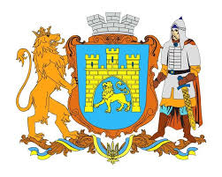

Офіційно затвердженими символами Львова є герб, великий герб, хоругва Львівської міської ради та логотип. Статут Львова символами міста визначає також назви чи зображення архітектурних та історичних пам'яток.